Biography
I am a Ph.D student in Computer Science at The University of British Columbia (UBC) working with Prof Kwang Moo Yi and Prof Helge Rhodin with interest in controlling generative models to align with user intent.
I was previously a Google and Facebook scholar at the African Masters in Machine Intelligence program (AMMI). I am blessed to have worked with Dr. Gaurav Bharaj and Dr. Pablo Garrido at Flawless AI, mentored by Dr. Gamaleldin Elsayed from Google Brain, and taught by Prof. Leonid Sigal at UBC.
News
Dec 2024
I am so grateful to have been awarded the RBC Borealis AI Fellowship.
Sep 2023
Our work on "Mirror-Aware Neural Humans" received the best paper award at the weakly supervised computer vision workshop (Deep Learning Indaba 2023) and a poster prize at the main event. Also accepted to 3DV 2024.
Jun 2023
I am so excited and grateful to co-organize and lead the first member-led Black in AI social at CVPR 2023.
Mar 2023
I graduated and completed my MSc. program at The University of British Columbia!
Selected Publications
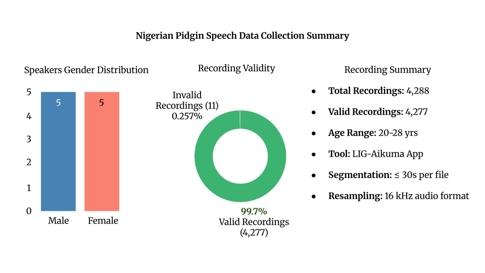
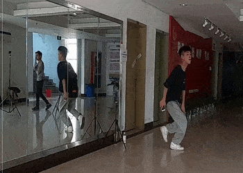
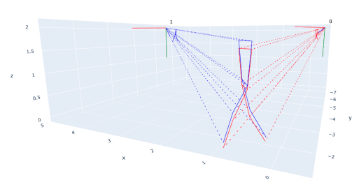
CasCalib: Cascaded Calibration for Motion Capture from Sparse Unsynchronized Cameras
IEEE FG 2024 · Oral presentation
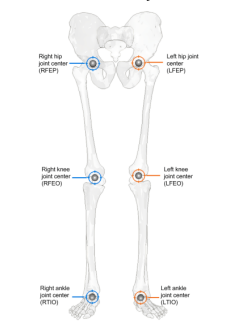
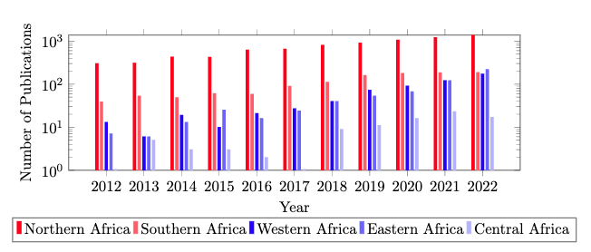
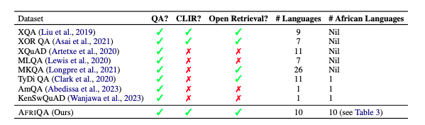
AfriQA: Cross-lingual Open-Retrieval Question Answering for African Languages
EMNLP Findings 2023
Other Projects
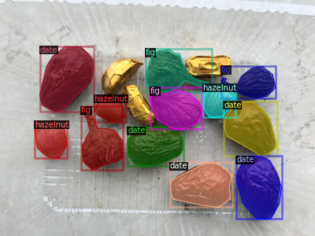
Instance segmentation on a custom nuts dataset trained with Detectron2.
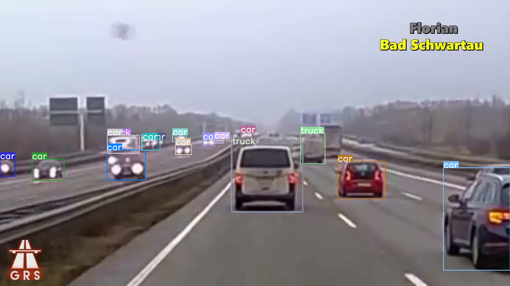
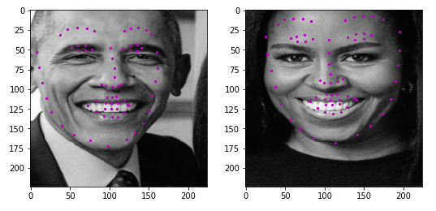
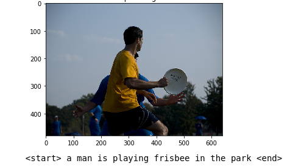
Automatically generate captions that describe the content in images.
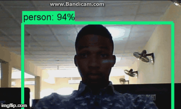
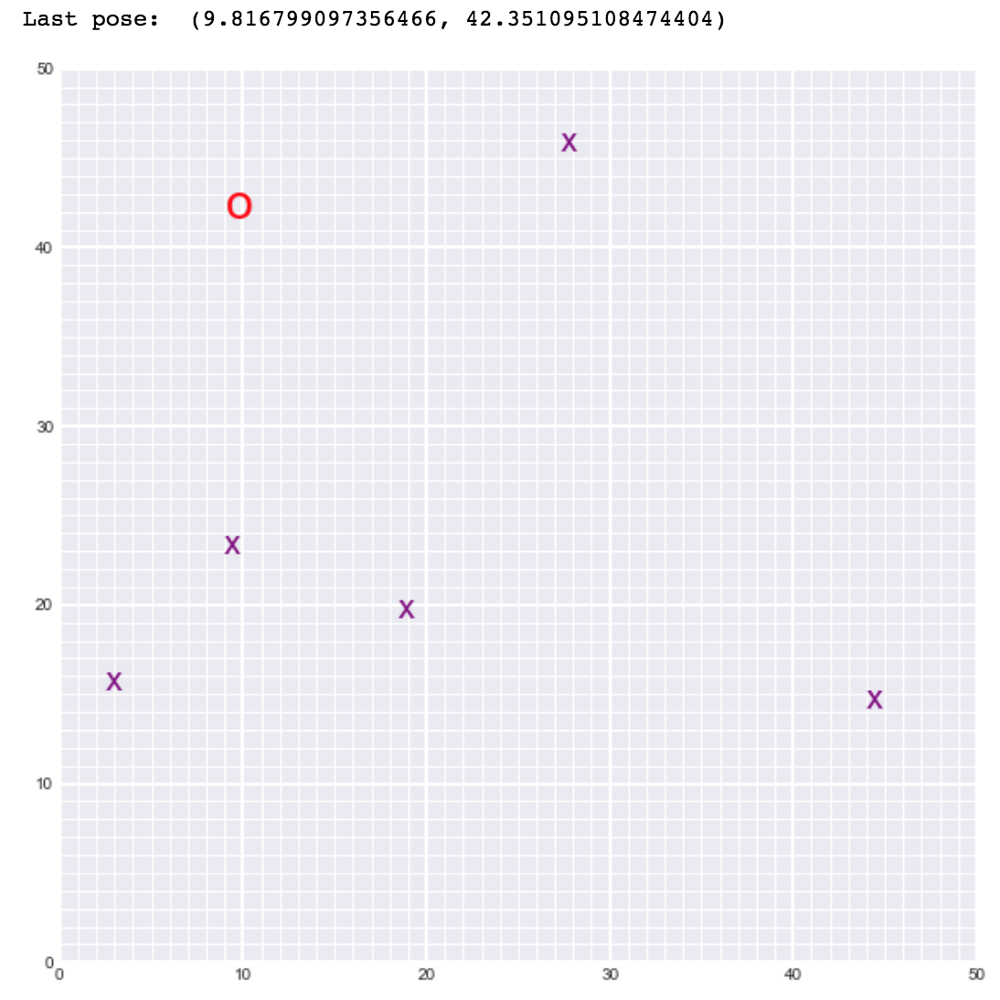
Simultaneous Localization and Mapping (SLAM) for a 2D world.
Invited talks
- I am delighted to give talk on "Masterclass to Fundamentals of Computer Vision and Image Processing"
Host: DSN - Data Scientists Network (Data Science Nigeria) | Youtube - It was such an honor to speak on the “The Future of Artificial Intelligence in Africa and in the Diaspora” at Kampala International University.